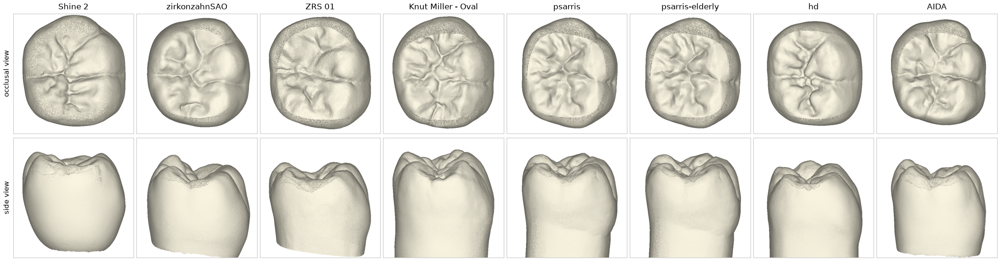

先把手上的做完，再回来这里挑。每条写清楚：为什么值得做、现在到哪一步、要多少训练时间或什么数据。 进行中 待做 缺数据 做完了（移到来时路）

| 内容 | 规模 | 能不能读 | 能拿来做什么 |
|---|---|---|---|
| exocad 牙库（teeth + pontics） | 162 套，2871 颗牙冠形态、2920 个桥体 | ✅ .eoff 全部能解析；另有 2700 个 .drmsdfa 是加密的 | ① 形状模型的模板换成设计级牙形；② 扩散模型补细节时学这些清楚的牙尖窝沟；③ “检索 + 拟合”对照方法；④ 新指标：生成的牙和最像的设计级牙形差多少 |
| 真实设计病例（exocad，26 号牙冠） | 1 例：上下颌口扫 + 技工设计牙冠 + 颈缘 | ✅ | 技工设计当真值的第一个评测病例（Codex 已整理成 case_001） |
| 真实种植病例（3Shape，14 号） | 1 例：种植体 + 基台 + 牙冠 | ❌ 3Shape 加密格式（CE） | 读不了网格，只有设计参数 XML |
| 基牙库 + 牙冠库（STL） | 各 32 个，编号一一对应 | ✅ | “预备体 → 牙冠”成对的标准形：测内表面贴合、粘接间隙、最小厚度这一套 |
| exocad 设计导出（.obj，带元数据） | 16 个 | ✅ 带咬合接触点、咬合轴 | 设计级牙冠 + 咬合接触点，可以对照我们的咬合调整 |
| 3Shape 牙库（.dme / 编号文件） | 几十个 | ❌ 加密 / 带密码 | — |
| Bits2Bites（以前下的） | 200 人上下颌 + 咬合分类标注 | ✅ | 补对颌训练数据；按咬合分类分组评估 |
结论：“预备体 + 技工设计牙冠”的真实病例仍然只有 1 个能用，这一项还是缺数据；但牙库是很好的形态先验，能直接改善“窝沟偏浅”。
| 想法 | 状态 | 为什么 / 现在到哪 | 代价 |
|---|---|---|---|
| 用 exocad 牙库改善咬合面细节 | 做了一半 | 162 套设计级牙形（11-16 新数据）。做法：形状模型的模板换成牙库牙形；扩散模型补细节时在牙库上训练 / 微调；
加一个“检索 + 拟合”的对照方法（和 exocad 自己的做法一样）；新指标“和最像的设计级牙形差多少”。 11-16 已做：库牙对齐到真牙造“设计风格”样本、扩散模型加风格类别，指标小幅变好但沟没明显变深。11-17：风格引导 w=4 + 抹平 0.8、训练加细节损失，窝沟深度 1.92 → 1.97（真牙 2.00），已换成网页默认。检索 + 移植库牙试过，对不上位置，不做。11-17：引导已蒸馏进模型（一遍出效果）；形状模型换库牙模板试过，明显变差，不做 | 牙库导出半天；训练几小时 |
| 末端牙咬合调整后仍穿入对颌 | 已解决（11-17） | 末端牙模型上线后，咬合调整后仍穿入对颌 >0.1 mm 的从 5.9% 升到 13.7%（形状模型时代的末端牙更矮）。 要看是咬合调整对只有一侧邻牙的牙处理不好，还是末端牙模型整体偏高（纯扩散时设计风格的末端牙明显偏高） | 半天 |
| 末端牙的库牙对齐率低 | 待做 | 7 号牙的库牙只有 36% 对得上（其他牙位约 60%），第二磨牙的天然形态和库牙差得多；可以放宽缩放范围、或换各向异性缩放 | 2 小时 |
| 基牙库 / 牙冠库（elosdent 07、09） | 只能当参考 | 11-17 解开看了：32 个基牙和 32 个牙冠是两套各自的标准形，不在同一坐标系（相距 10–27 mm），基牙左右对称重复， 不是“预备体 + 技工设计牙冠”的配对，不能当贴合度真值。可以拿基牙形状造模拟预备体 | — |
| 分割二选一更进一步 | 试过，没用（11-18） | 并集（任一模型报缺就算）检出 66.8%，但网页要一张分割图；可以试逐牙融合：TeethSplineSeg 报缺的牙位，在我们的分割图里把那颗牙的标签去掉（两模型的点一一对应） | 半天 |
| 颈缘线检测（预备体牙冠的最大短板） | 待做（优先） | 模拟预备体评分卡：自动颈缘线平均偏 0.36 mm、95% 在 1.1 mm 内（临床 0.1–0.2）；给真值时组织面贴合、封闭都很好。 已有的学习式颈缘线模型（单独代型上训的）还没接进流程，先在模拟预备体评分卡上比 | 接入 + 评估半天 |
| 预备体牙冠外表面用形状模型 + 扩散 | 做了一半 | PREP_OUTER=learned：整体形状好 16%、高度更准，但牙尖位置比镜像对侧牙差（0.92 vs 0.75），且会碰到对颌（−0.02 mm）。 可以试：牙尖用对侧牙、整体用模型；查清咬合调整为什么对它不起作用 | 半天 |
| 预备体牙冠外表面：颈缘线当生成条件 | 待做 | 现在颈缘线只在后面的几何步骤里用，生成模型不知道牙冠底边在哪、该多高，可能是牙尖位置差、碰对颌的原因之一。参考蒙特利尔理工 Golriz 团队的 shellGeneration（github.com/Golriz-code/shellGeneration，DMC 的前作），把颈缘线 / 预备体形状编码后作为条件输入。模拟预备体数据已经有了，可直接训（11-19 记） | 改输入 + 重训约 1 天 |
| 扩散模型接着训（v2） | 暂停 | v1 只训了 30 轮，损失还在降。v2 从 v1 接着训，11-15 训到第 10 轮时暂停，GPU 让给“看着形状模型补细节的扩散”。 检查点在服务器 runs/radial_diffusion_v2/model_paused.pt，用 --init 接着训 | 剩 30 轮约 2.5 小时；可能要 100 小时以上才饱和 |
| 专门训一个“看着形状模型补细节”的扩散模型 | 进行中 | 把形状模型的输出当条件、真牙当目标专门训（radial_diffusion train --with-d）。11-15：3.4 万颗训练牙的形状模型的图已生成（radial_dmaps.py，约 20 分钟）， 从 v2 第 10 轮的权重起步训 25 轮；训练时给形状模型的图加扰动，防止学成“照抄形状模型” | 25 轮约 2 小时；效果好的话值得训到 100 轮以上 |
| 数据准备搬到 GPU 上 | 部分完成 | 11-15：径向深度图、形状模型的输出图有了 GPU 版（radial_gpu.py）： 投影成图快 5–15 倍；原始口扫解析一次存成网格缓存，之后不再解析；分 8 个 GPU 进程并行，bite_val 102 个颌 92 秒 → 约 15–30 秒。 TeethSplineSeg 的预处理：原来单进程逐个做最远点采样（每个扫描 9 秒），改成 16 个进程同时用 GPU。还可以做：批量矩阵版最远点采样（几十个扫描一起，每个约 0.8 秒） | 剩下的半天 |
| 一次生成多颗，按邻牙 / 对颌贴合挑一颗 | 待做 | 扩散每次结果不同；评分卡本身就能当挑选标准。改动小 | 推理时间 × 采样数 |
| 图边缘（邻面）的小缺口 | 待做 | 形状模型+扩散 个别牙在邻面出现缺口（报告图里的 34）。可以在边缘区域多保留形状模型的形状 | 小 |
| 生成模型升级：Flow Matching + DiT，形状潜空间 | 待做 | 现在的扩散是 DDPM + U-Net + 2D 径向图（约 2021–22 年的配置）。换成 Flow Matching（采样步数少）+ Transformer 去噪网络，表示换成 3D 形状潜空间（窝沟分辨率更高）；或者在 TRELLIS / Hunyuan3D 这类大模型权重上微调。见业界进展页 | 重写模型 + 重训，几天；大模型微调需要更多显存 |
| 窝沟更深、更细 | 待做 | 所有模型的窝沟都比真牙浅。径向图中心分辨率低：换成以咬合面为中心的高度图，或多视角深度图 | 换表示要重做缓存 + 重训 |
| 评分卡做成可微的损失 | 部分 | “外形 + 间隙损失”试验 直接加进损失失败了（撑大牙冠）。改成扩散采样时的引导（guidance），不改训练 | 中 |
| 复现 CrownGen / ToothCraft，在我们的评分卡上比 | 待做 | CrownGen 有代码和示例数据，ToothCraft 有权重。用同一套评分卡比，才知道我们到底处在什么位置 | 各 1–2 天 |
| 第三磨牙生成 | 待做 | 现在交给几何方法兜底 | 小 |
| 用技工设计的牙冠当真值 | 缺数据（有 1 例） | 现在的真值是天然牙，不是修复体设计（DMC、MADCrowner 都用技工设计）。要和技工所合作拿数据 | 数据 |
| 多颗相邻缺牙一起生成 | 待做 | exocad 3.3 已支持 3 颗相邻后牙；CrownGen 一次出多颗 | 中 |
| 指标 | 状态 | 要量什么 | 大概怎么量 |
|---|---|---|---|
| 牙弓贴合度 | 待做 | 牙冠颊侧（外侧）的弧度是不是顺着整排牙的牙弓走，趋势一致、不凸出也不凹进 | 拟合整排牙颊侧的牙弓曲线，量生成牙颊面到曲线的偏离和切线方向的差；和天然牙比 |
| 美观度 | 待做 | 看起来自然、和左右对称牙协调（前牙尤其重要） | 和对侧同名牙比形状、宽高比、轴倾角；以后可以让医生 / 技工打分做参考 |
| 前后表面细节 | 待做 | 前牙舌侧（里面）有内凹（舌窝）、唇侧（外面）有浅的发育沟；牙冠前后两面也要像真牙 | 现在的细节指标只看咬合面。加唇侧、舌侧高度图的起伏和细节量，舌窝深度；前牙单独统计 |
| 想法 | 状态 | 为什么 / 现在到哪 | 代价 |
|---|---|---|---|
| Bite2Text 真实缺牙做伪标注训练 | 待做 | 模拟闭合缺隙没用（41% → 43%），真实缺牙检出 55% 卡在这里。用现模型 + 医生报告约束出伪标签 | 标注规则 1 天 + 训练一晚 |
| 用 Bite2Text 口内照片交叉核对缺牙 | 待做（优先） | Bite2Text 每个病人都带口内照片，代码里还完全没用到。先不做重建：在照片上数牙 / 认牙位，和 3D 分割结果对照，照片里看不到而分割说“有”的牙标为可疑缺牙。可参考 Bite2Text 参赛方案（github.com/Ali5hadman/Bite2Text-odin2026）自带的照片模型权重；TeethDreamer（5 张照片重建牙齿）说明照片信息足够。参赛方案是 AGPL，自己学习研究用没问题（11-19 记） | 评估脚本 1 天 |
| 缺牙检测加“牙数 + 牙宽”判断 | 待做 | 不只靠分割的牙号判断缺哪颗 | 小 |
| 乳牙识别 | 待做 | 15 颗“恒牙没萌出、乳牙在位”全部没检出 | 缺标注数据 |
| 分割换 PTv3 + 全分辨率点 | 待做（优先） | 和公开最好的差约 5 个点（87.4% vs 92.6%），主要是网络（DGCNN）和点数（8000）。多训练已证明没用。11-15 实测：TeethSplineSeg 标准测试集 91.8%（我们 87.4%），但真实缺牙检出 47.6%（我们 54.9%）。下一步：用它的 PTv3 + 牙弓坐标结构，加我们的模拟缺牙 / 闭合缺隙数据重训，两边的长处都要 | 评估几小时；重训约 2–4 小时 |
| 牙弓连续坐标（B 样条）当输入特征 | 待做 | TeethSplineSeg 的思路，和我们编号纠错里的牙弓投影是一回事 | 重训一晚 |
| 在同一批扫描上跑 TeethSplineSeg / CrossTooth 权重 | 待做 | 一键评估脚本已经写好（11-01），还没跑完对比 | GPU 几小时 |
| 标志点检测漏低矮的磨牙牙尖 | 待修 | 评分卡的牙尖误差因此偏大 | 小 |
| 分割边界加图割（graph-cut）后处理 | 待做 | 牙和牙龈的边界偏粗，影响牙颈线 / 颈缘线。MeshSegNet 一类的常规做法：网络概率当数据项，相邻面片二面角当平滑项，跑一次图割，不用重训。architecture.md 提过，代码里没实现。先量一下边界误差有多少来自网络本身（11-19 记） | 半天 |
| 想法 | 状态 | 为什么 / 现在到哪 | 代价 |
|---|---|---|---|
| 学习式颈缘线接进整颌流程 | 试过，持平（11-18） | 已接进流程（MARGIN_METHOD=learned）。口扫模拟预备体上重训 + 按角度取线后，评分卡上和几何方法平滑 4 持平（0.306 / 0.303 mm）。 模拟预备体的颈缘是“分割边界附近磨出来的台阶”，两种方法都容易找；真正要比得有真实口扫预备体 + 技工标的颈缘线 | 中 |
| 颈缘线：邻面留在分割边界、颊舌侧找棱 | 做了，默认关（11-24） | 公平评测下 0.338 → 0.315 mm，提升小且依赖分割边界准；分割偏时反而被带偏。等有真实标注的整颌备牙数据再定 | 低 |
| 分割训练加模拟预备体 | 试过，缺牙检出变差（11-24） | 预备体 IoU 0.893 → 0.936，但真实缺牙检出 54.4% → 52.6%。 可以试：只在用户标了预备体时，用预备体专用模型重分那颗牙附近；或者训练时同时保留缺牙样本的权重 | 中 |
| 真实整颌备牙口扫 + 颈缘线标注 | 缺数据 | 这一轮最大的教训：模拟预备体和真实的差距（邻面、分割）决定了结论，5 个没标注的 Cegep 病例不够判断。需要几十个带技工颈缘线的真实病例 | — |
| 形状模型加颈缘线条件（预备体外表面） | 已上线（11-23） | 真值颈缘线时整体形状 rmse 0.256 → 0.234 mm；自动颈缘线时收益小（0.298 → 0.290）， 所以颈缘线检测越准、这里赚得越多。下一步：真实预备体数据上的颈缘线检测 | 低 |
| 颈缘线当扩散条件生成预备体外表面 | 试过，持平（11-23） | 模型本身给颈缘线后深度误差 0.47 → 0.32 mm，但流程里外形由形状模型定、底部由几何方法贴颈缘，补细节时持平；完整生成反而更差。 让形状模型本身看颈缘线就有用了（见上一行） | 中 |
| 真正落地的路线：套在预备体 / 基台上的牙冠 | 缺数据 | 缺牙通常先种植（基台）或把邻牙磨小做桥，牙冠是套在预备体 / 基台上的。 除了外形和邻牙、对颌合适，还要：内表面贴合预备体（留 0.03–0.05 mm 粘接间隙）、边缘沿颈缘线封闭（短了漏、长了硌牙龈）、穿龈部分和牙龈贴合、最薄处够厚。 流程里已有几何做法（generate_prep_crown：内表面、粘接间隙、最小厚度、切边、封闭成可打印实体），外形可以直接换成我们的生成模型。 先用天然牙冠把外形做好、把流程铺通；有了“预备体 + 技工设计牙冠”的数据后，外形模型微调几小时即可，颈缘线模型接进整颌流程 | 数据；有数据后几小时到一天 |
| 导出 → 打印全流程打通 | 待做 | 现在已能导出封闭 STL。下一步：按打印要求检查（壁厚、封闭、法向），试打一颗（光敏树脂打印临时冠 / 永久冠树脂，或交给氧化锆切削） | 小 |
| 预备体牙冠的评分卡（边缘密合、内部适合、最小厚度） | 缺数据 | 带预备体的整颌口扫只有 5 个 | 数据 |
| 想法 | 状态 | 为什么 / 现在到哪 | 代价 |
|---|---|---|---|
| 手动指定任意牙位生成（不在检测列表里的） | 待做 | 现在第 2 步只能从检测到的缺失牙里勾 | 中 |
| 大网格加载慢 | 局域网已解决 | 局域网直接访问 http://192.168.31.110:8080（不走隧道，11-15）。外网访问仍然慢：可以压缩（Draco）或先给低精度版 | 中 |
| 邻接 / 咬合距离热力图实时显示 | 待做 | 技工复核时间决定实际省多少时间（见业界进展） | 中 |